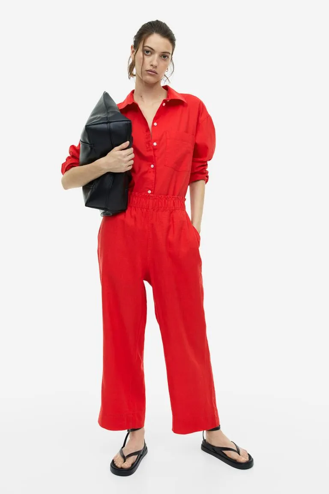
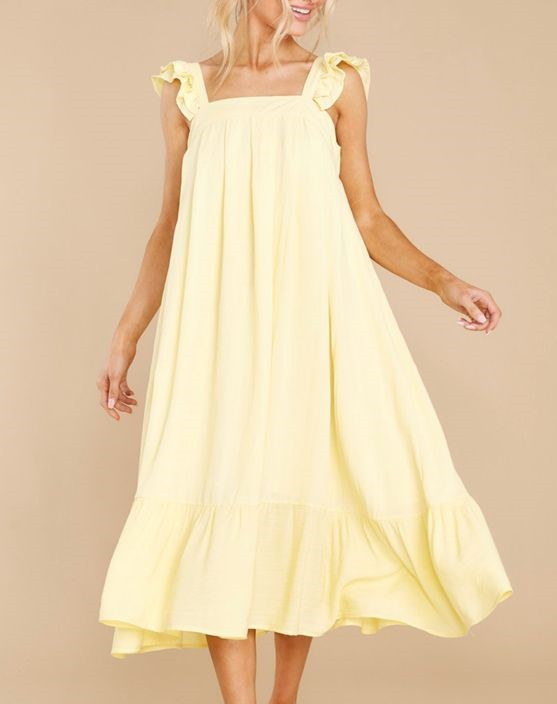
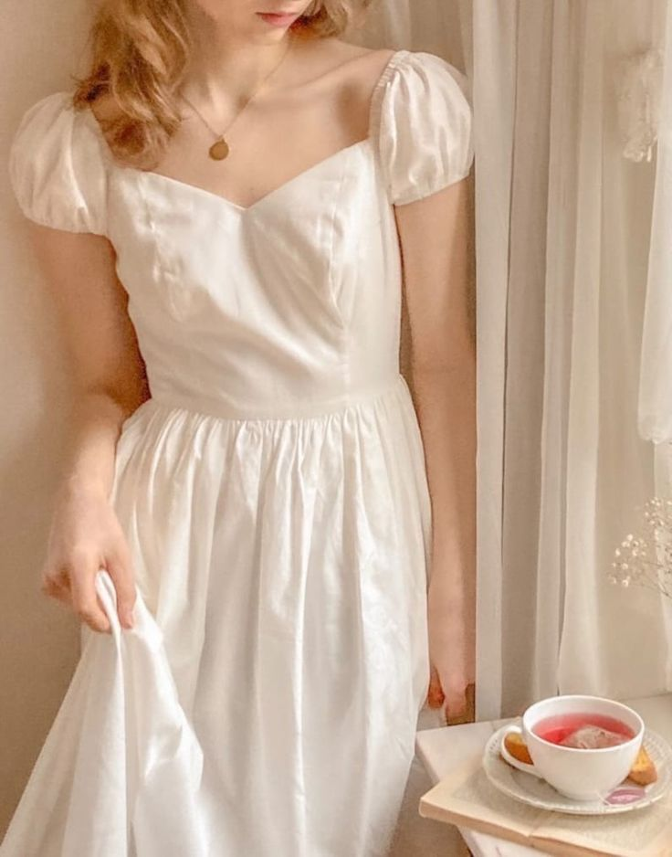
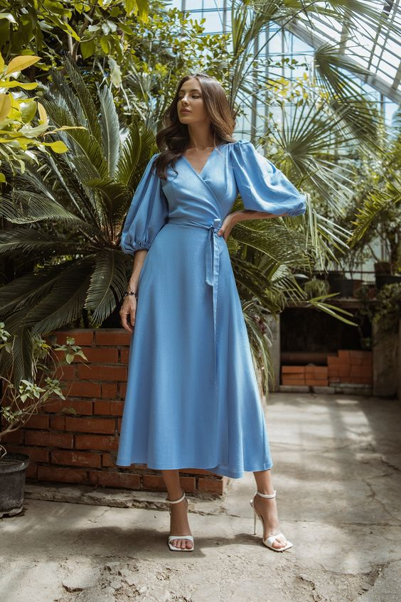
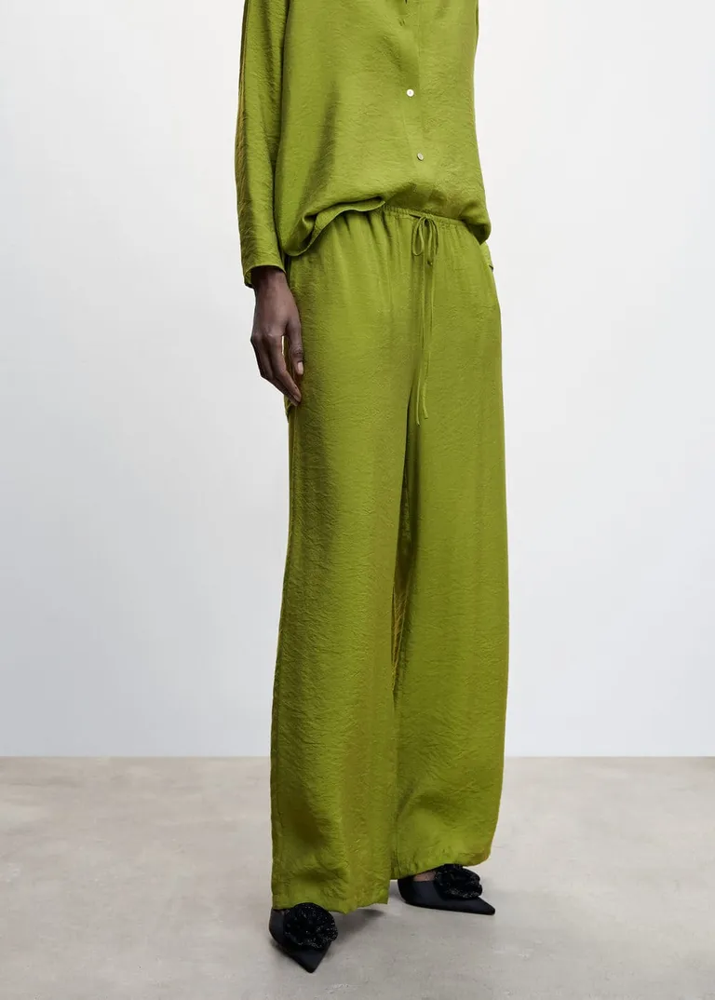

Colour is one of the easiest yet most impactful ways to update your look. If you're usually found wearing neutral shades (much like I am), opting for a bright dress for the next circled date in your social calendar will be just the thing to give your aesthetic a shake-up. Similarly, if you're usually found wearing vivid clothing, neutralising your wardrobe with an all-white ensemble can be just the thing if you find yourself in need of a change. Such is the power of colour trends, and summer is the ideal time to start experimenting.
From standout shades to something more subtle,
scroll on to see the summer colour trends that will still feel relevant
next year, and the year after that,
and the year after that.
TOMATO RED

Red isn't always the easiest colour to wear with other tones,
but these fashionable types have cracked it—wear it top to toe.
BUTTERMILK YELLOW

If quiet luxury were a colour, it would absolutely be pale yellow.
Long before the aesthetic was a thing, however, buttermilk tones have been a mainstay in
the summer wardrobes of the best-dressed women I follow.
More wearable day to day than ultra-bright yellow tones,
this shade works well with other summer colours on my list,
doubling up as a neutral when you need it to.
FRESH WHITE

Okay, so I know I said I wasn't going to talk about black,
but white? This is a shade that feels so intrinsic to summer,
it would be remiss of me not to mention it.
Commonly found by way of lightweight materials such as linen
or cotton, some of the most cherished pieces in my wardrobe are
white and designed for summer, and I can wear them year after
year without the slightest concern about them looking dated.
CERULEAN BLUE

Often it's the colours we find in nature that feel the most timeless,
and that's certainly the case with blue. I've noticed more and more people
wearing this gorgeous cerulean shade over the
past few years, and it's easy to see why.
Joyful and chic in equal measure, this is another shade
that looks incredible on everyone.
AVOCADO GREEN

Kelly green—otherwise known as Bottega Veneta green—is a bright,
grass-green shade that has been enjoying a surge in popularity over
the last few seasons. However, more grounded, avocado-type greens make
just as much of a
statement while, arguably, being less trend-driven.
Although it looks great on its own, this green's powdery undertones mean
it styles beautifully with colours you might not expect;
think pink, orange and blue.
SOFT BEIGE
Yes, it's versatile, but my favourite beige looks are when the colour
takes centre stage as opposed to playing second fiddle to more enticing
colours. Understated but reliable, beige is the colour I reach for when
I need to look polished in the summer months, and apparently I'm not the only one.